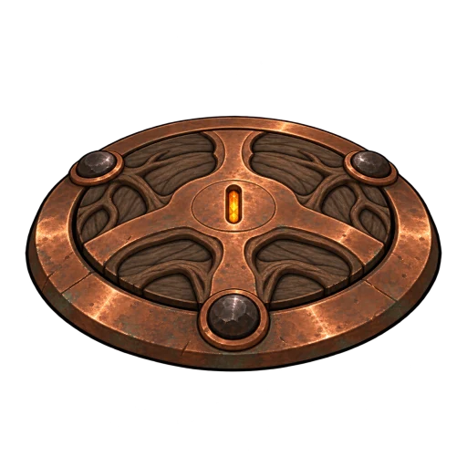
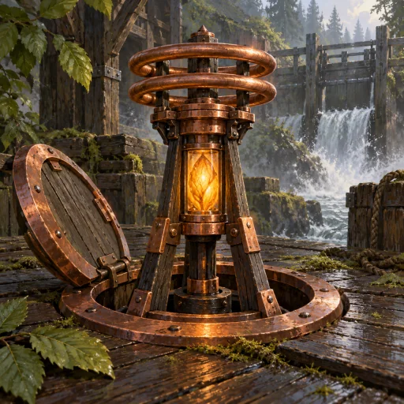

Battle forms at 13×13 CSS px
Hidden · field

Revealed · field 
Hidden · dark
Revealed · dark
Hidden · checker
Revealed · checker
Standalone asset diagnostic, not an application capture. Battle forms are 13×13 CSS pixels at device scale factor 1; portrait tiles are exactly 64×64 and 78×78 CSS pixels. Uniform arena-like and checker backgrounds expose alpha edges and halos.

